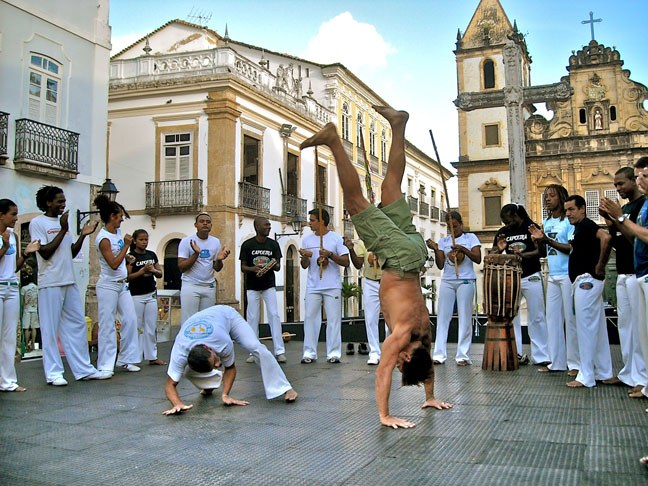
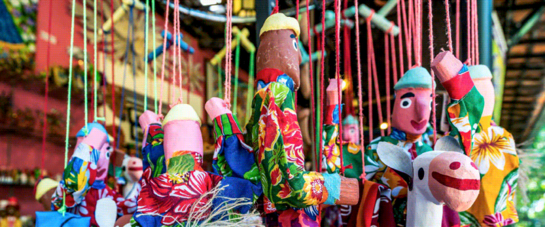
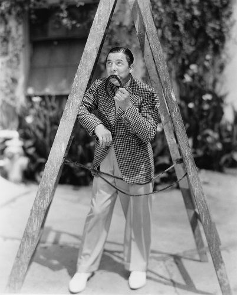

O que é, o que é?
Cai em pé e corre deitado?
A chuva.
Histórias, brincadeiras, crenças, músicas e costumes que atravessam gerações e ajudam a contar a história do nosso povo.
O folclore faz parte da memória e do cotidiano de diferentes comunidades brasileiras.
O folclore brasileiro é formado por diversas manifestações da cultura popular, como lendas, músicas, danças, festas, brincadeiras, crenças, costumes e histórias.
Essas manifestações foram construídas ao longo do tempo e receberam influências de diferentes povos, especialmente indígenas, africanos e europeus.
Por isso, estudar o folclore significa também conhecer um pouco da diversidade cultural existente no Brasil.


Tente descobrir a resposta antes de revelá-la.
Cai em pé e corre deitado?
Tem dentes, mas não morde?
Quanto mais se tira, maior fica?
Brincadeiras com palavras, sons e repetições.
O rato roeu a roupa do rei de Roma.
Três pratos de trigo para três tigres tristes.
O peito do pé de Pedro é preto.
Frases transmitidas de geração em geração que carregam ensinamentos do cotidiano.
Significa que a persistência pode ajudar uma pessoa a superar dificuldades e alcançar seus objetivos.
Valoriza a paciência e a perseverança diante de uma situação difícil.
Ensina que é melhor tomar cuidados para evitar um problema do que lidar com suas consequências depois.
Pequenos versos populares presentes nas brincadeiras infantis.
Uni-duni-tê,
salamê-minguê,
um sorvete colorê,
o escolhido foi você!
Hoje é domingo,
pede cachimbo.
O cachimbo é de ouro,
bate no touro.
Práticas populares associadas a desejos, sorte e prosperidade.
Uma tradição popular consiste em guardar uma folha de louro na carteira como símbolo de prosperidade e abundância.
Uma tradição popular de Ano-Novo consiste em guardar sementes de romã, associando-as à prosperidade e à abundância.
Crenças populares que foram transmitidas entre gerações.

Uma superstição bastante conhecida afirma que passar debaixo de uma escada poderia trazer azar.
Segundo uma crença popular, quebrar um espelho poderia trazer anos de azar.
Canções que acompanham brincadeiras e fazem parte da memória de muitas gerações.
Ciranda, cirandinha,
vamos todos cirandar,
vamos dar a meia-volta,
volta e meia vamos dar.
O cravo brigou com a rosa debaixo de uma sacada.
Uma cantiga tradicional presente na cultura infantil brasileira.
O folclore brasileiro é uma importante expressão da cultura popular do país.
Suas histórias, músicas, brincadeiras, crenças e costumes mostram a diversidade das comunidades que formaram e continuam formando o Brasil.
Preservar essas manifestações significa manter viva a memória cultural e valorizar os conhecimentos transmitidos entre gerações.